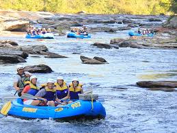
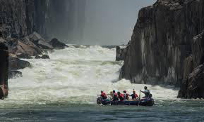

Ready for an adventure? Reach out to plan a trip
Contact UsDown the River - Trips
Soča River in Europe

The Soča River in Slovenia, with its crystal-clear emerald waters, offers an exhilarating whitewater rafting experience. Surrounded by the Julian Alps, the river winds through stunning gorges and cascades, providing adrenaline-pumping rapids for all skill levels. From gentle family-friendly sections to challenging whitewater, the Soča caters to both beginners and experienced rafters. The breathtaking scenery, combined with the thrill of the rapids, makes it an unforgettable adventure.
Pigeon River in United States

The Pigeon River, nestled amidst the Great Smoky Mountains, offers an exhilarating whitewater rafting experience. With its thrilling Class III and IV rapids, the river caters to both adrenaline junkies and families seeking a fun-filled adventure. As you navigate through the scenic gorge, you'll encounter powerful currents, cascading waterfalls, and breathtaking mountain vistas. Whether you're a seasoned rafter or a first-timer, the Pigeon River promises an unforgettable journey through the heart of nature's beauty.
Chattooga River in United States
The Chattooga River, a designated Wild and Scenic River, offers an exhilarating whitewater rafting experience. Its pristine waters wind through a breathtaking gorge, carving a path of excitement for adventurers of all levels. From gentle Class II rapids to heart-pounding Class V drops, the Chattooga caters to both novice rafters and thrill-seekers. As you navigate the river's turbulent currents, you'll be immersed in a world of natural beauty, surrounded by towering cliffs and lush forests. Whether you're seeking a family-friendly adventure or an adrenaline rush, the Chattooga River promises an unforgettable journey.
Zambezi River in South Africa
Whitewater rafting on the Zambezi River below Victoria Falls is an exhilarating adventure for thrill-seekers. The river's powerful currents and dramatic rapids create an adrenaline-pumping experience like no other. As you navigate through the Batoka Gorge, you'll encounter challenging rapids with names like "The Terminator" and "The Washing Machine."The journey is not just about the thrill; it's also an opportunity to witness the breathtaking beauty of the gorge and the iconic Victoria Falls. With experienced guides ensuring safety, this whitewater rafting adventure is a must-do for anyone seeking an unforgettable experience in one of Africa's most stunning natural wonders.
Whistler in Canada

Whistler, British Columbia, offers a thrilling whitewater rafting experience for adventurers of all levels. With its majestic mountains and rushing rivers, it's a haven for those seeking an adrenaline rush. Whether you're a seasoned rafter or a first-timer, you'll find a suitable tour to match your skill level and preferences. From the exhilarating rapids of the Elaho and Squamish Rivers to the more family-friendly Cheakamus River, there's something for everyone. Experienced guides will navigate you through stunning landscapes, pointing out local wildlife and geological wonders along the way. As you paddle through the rapids, you'll feel the power of the water and the beauty of the surrounding wilderness. It's an unforgettable adventure that will leave you with lasting memories.
Quick Deatails
| Trip Name | Duration | Difficulty | Price |
|---|---|---|---|
| Soča River in Europe | 1 Day | Intermediate | $150 |
| Pigeon River in United States | 1 Day | Difficult | $250 |
| Chattooga River | 2 Days | Intermediate | $200 |
| Zambezi River | 3 Days | Easy | $100 |
| Whistler | 4 Days | Easy | $300 |